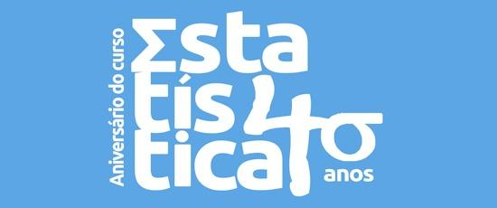
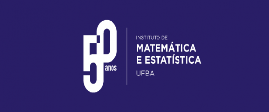

Ir para o conteúdo principal
Departamento de Estatística
Instituto de Matemática e Estatística · UFBA
Menu
Acompanhe o DEst
Editais, notícias e agenda nas nossas redes
Notícias
Mais notícias
Carregando notícias...
Destaques

40 anos do Bacharelado em Estatística

Instituto de Matemática e Estatística
Semana Temática da Estatística
Campus da UFBA
40 anos
IME
Semana
Campus